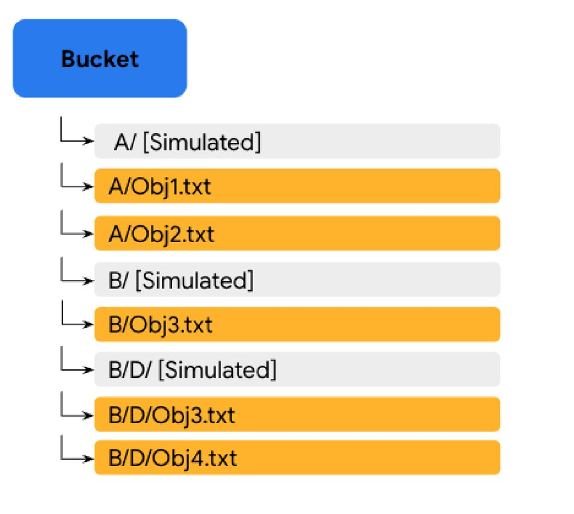
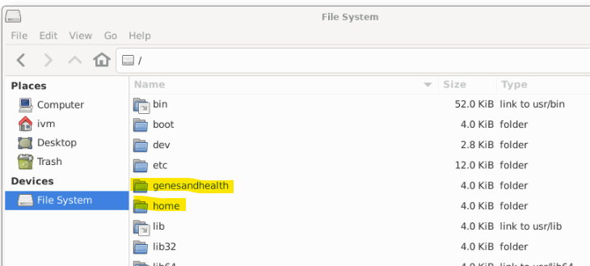
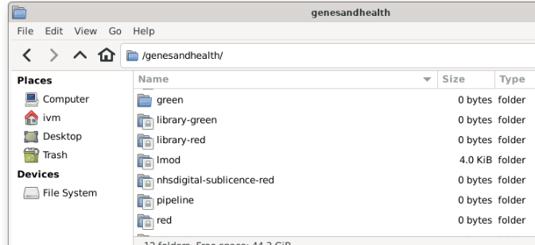
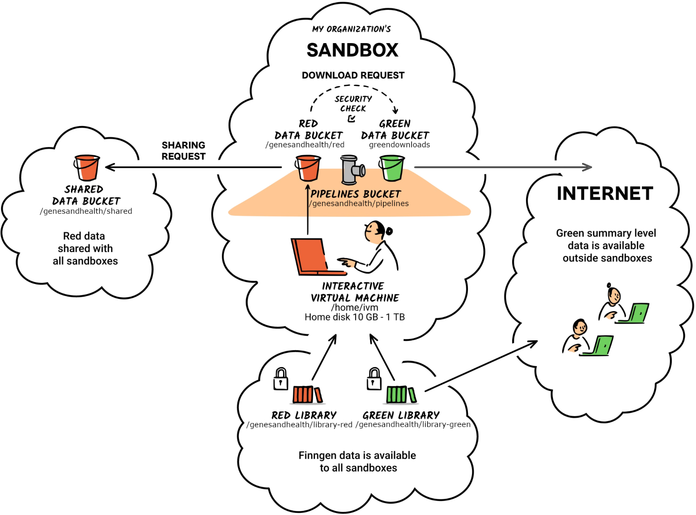

Understanding TRE folders and buckets¶
To undertand how Genes & Health data are stored and how to use the data resources, we need to understand Google Cloud Storage (GCS) buckets. GCS buckets are used for all data storage in the TRE with the exception of user data in the home directory.
home directory
The home directory is associated with the Gene & Health virtual machines rather than GCS --so it is (and behaves as) a standard unix directory. Files and directories in home are created, manipulated and deleted as in Unix/Linux. Strictly speaking, your home directory is a sub-directory of home: /home/ivm --you have read/write access to /home/ivm but read only to /home
home directory persistence
The home directory is persistent. When you close a virtual machine, the home direcotry will not be deleted and will present the same way next time you spin a new virtual machine --regardless of the configuration of the new VM.
Although the home directory is persistent, its use is recommended only for development purposes; we advise ensuring critical code and data are regularly copied to the red folder.
Understanding Google Cloud Storage (GCS) buckets¶
Genes & Health TRE data are stored in Google Cloud Storage (GCS) buckets (on a server located in London, UK). Buckets are the basic data container for GCS and everything stored in GCS must be contained in a bucket.
Each of the G&H TRE top level storage domains are separate GCS buckets, for example, library-red, red, green and exomes-library-red. Files in a G&H TRE bucket are just that. The bucket contains a collection of files.
GCS buckets and directories¶
The concept of a physical directory does not rightly exist in GCS. Rather, directories are “simulated” by GCS from the files name. This can be illustrated as follows:

In the image above, the filenames are A/Obj1.txt, A/Obj2.txt, B/Obj3.txt, B/D/Obj3.txt and B/D/Obj4.txt and the files simply exists a files in the bucket with those filenames. Bucket folders A/, B/ its sub-folder D/ are simulated. This means that if you were to delete A/Obj1.txt and A/Obj2.txt, the simulated folder A/ would disappear (there would no longer be any files justifying its existence). However, if you were to delete file B/Obj3.txt, both simulated folder B/ its sub-folder D/ would remains as they would be accounted for by filenames B/D/Obj3.txt and B/D/Obj4.txt.
If you were to delete all the .txt files in the bucket, all of the directories would disappear but the bucket would remain in existance.
G&H's root directory (/)¶
The G&H data buckets reside in the genesandhealth folder of the VM's root directory (/). The home directory also resides within the VM's root directory.
Warning
Other directories under the VM's root directory are system, software and VM related folders and not of use to TRE users.

G&H data buckets¶
G&H data buckets can be found in the /genesandhealth directory. Depending on your sandbox, you will see different buckets (essentially behaving as directories) in your /genesandhealth directory
Bucket nomenclature
G&H buckets are named red and green or suffixed with -red or -green to indicate the type of data stored in them: red is for potentially sensitive data that should not be shared outside your sandbox; green is for data that can be shared with the outside world.
When you log into your sandbox, your VM will have a number of buckets available for you. Here are some of the buckets (top level "directories") in the G&H sandbox-1 TRE:

Identifying G&H GCS buckets¶
G&H buckets can be identified into two way within the TRE --depending on the file operation you may need to use one or the other method of identifying the bucket:
- As a path on the virtual machine (e.g. (
/genesandhealth/red/) - As a Google Cloud Storage bucket identified by a Uniform Resource Locator (URL), for example
gs://qmul-production-sandbox-1-red/identifies theredbucket on sanddox-1.
The bucket's URL will depend on the sandbox you use.
What's in the bucket?¶
The fundamental storage resources in the TRE are:
- the
library-redandredbuckets containing respectively the G&H -omics data and your sandbox's data - your
homedirectory
These exist alongside a number of other data resources as illustrated below. Key data resources are then individually described.

Your home directory¶
Identifying home
- Specificity: sandbox specific
- VM directory:
/home/ivm - URL: Not applicable
Available at /home/ivm in your sandbox, this is your personal folder. This folder can be used to store any files you wish to keep in your working directories. /home/ivm is a semi-fast (HDD) storage and as such is faster than other parts of the sandbox. It might be worth running some jobs here, especially if you are loading large amounts of data.
This folder should not be treated as a permanent/long-term storage so anything you want to keep should be moved to the red folder. However, snapshots of the disk/folder are taken on daily basis and are retained for a period of 7-days. In-case you accidently delete some useful data from the /home/ivm folder, you can reach out to the TRE Admins to check if it is possible to recover the disk to a previous snapshot date within last 7 days.
This works as a standard Unix/Linux directory and is not a google GCS bucket.
(-)red buckets¶
The library-red bucket [read-only for users]¶
Identifying library-red
- Specificity: common to all sandboxes
- VM directory:
/genesandhealth/library-red/ - URL:
gs://qmul-sandbox-production-library-red/
This is a read-only folder that is common to all TRE users. library-red stores curated and raw data necessary for your analyses; it includes several subfolders, each designated for specific data types and purposes. For technical reasons, the data subfolders are actually in /genesandhealth/library-red/genesandhealth/. Folder names are (relatively) self-explanatory and all of them should contain a README type file explaining their content. If you find a folder without a README file, please contact the Genes and Health team for more information on its intended use.
The red bucket¶
Identifying red
- Specificity: sandbox specific
- VM directory:
/genesandhealth/red/ - URL:
gs://qmul-production-sandbox-XX-red/(replaceXXwith your sandbox number)
The red bucket is a read-write bucket for TRE users to store scripts and data safely (with versioning back-up) and to permit the sharing of these between project collaborators. It is the only GCS bucket directly accessible to non-admin TRE users. You are advised to create your own subfolder in red; user folders are typically created as FirstnameLastname (so /genesandhealth/red/JoeBloggs/) although some iconoclasts have broken this convention.
With great power...
The red bucket is shared between all sandbox users --even if you have created your own sub-directory. This means that you can:
- See all other sandbox users' files (and all other sandbox users can see your files)
- Move/rename/delete any sandbox users' files
Exercise caution when moving or deleting files in the
redbucket.
The consortiumpriorityperiod-library-red bucket¶
Identifying consortiumpriorityperiod-library-red
- Specificity: restricted sandboxes
- VM directory:
/genesandhealth/consortiumpriorityperiod-library-red/ - URL:
gs://qmul-sandbox-production-library-consortiumpriorityperiod-red
This bucket is only available to the core Genes & Health team, and to companies in the Genes & Health Industry Consortium. It contains data restricted during priority access periods (e.g. exome sequencing). Specifically, read access is only for sandboxes 1, 3, 4, 5, 6, 7, 9, 10, 13.
Same storage type as /genesandhealth/library-red, see above.
(-)green buckets¶
The green bucket [read-only for users]¶
Identifying green
- Specificity: sandbox specific
- VM directory:
/genesandhealth/green/ - URL:
gs://fg-qmul-production-sandbox-XX\_green/(replaceXXwith your sandbox number)
green can be read by other users in the sandbox. Users cannot write to green. Users can download from /genesandhealth/green from the internet/external systems.
The admin team will review data-out requests, and either place the data in green (for specific users to download, short term) or library-green (long term availability for all users to download).
Data in green
Data in each sandbox's green will be deleted approximately 1 week after creation. green is not intended for long term storage, only data transfer/download.
The consortiumpriorityperiod-library-green bucket¶
Identifying consortiumpriorityperiod-library-green
- Specificity: restricted sandboxes
- VM directory:
/genesandhealth/consortiumpriorityperiod-library-green/ - URL:
gs://qmul-sandbox-production-library-consortiumpriorityperiod-green
Access as for consortiumpriorityperiod-library-red but with external download enabled. Used for results. Not for individual level data.
Other folders¶
shared¶
You can 'publish' a file to /genesandhealth/shared by right clicking on it, and selected 'Share with all users'
/genesandhealth/shared is available to all other users within the TRE.
pipelines¶
This is the output of the high performance compute WDL Pipelines, that the ivm/pipeline writes to. Users of the sandbox have read only access.
Specific to each sandbox.
This is slower storage of large capacity (>8 PiB @ Feb 2022)
Public datasets bucket¶
We also maintain a bucket for public datasets. This is not visible from within the TRE. Much of the data is mirrored in /genesandhealth/library-green/ within the TRE.
Backups¶
Data in selected folders is protected from accidental deletion or alteration by the Google Object Versioning service. Specifically, for data in these folders -
Backups: Shared folders¶
/genesandhealth/library-red , 1 version, 30 days
/genesandhealth/consortiumpriorityperiod-library-red, 1 version, 30 days
/genesandhealth/nhsdigital-sublicence-red, 1 version, 30 days
Backups: Sandbox-specific folders¶
/genesandhealth/red, 2 versions, 30 days
/genesandhealth/pipeline, 1 version, 7 days
We will keep either a) the prior version of the data prior to a change (or deletion) by a user for 30 days , or b) two prior versions of the data prior to a change (or deletion) by a user for 30 days.
This allows the prior version to be restored, in the event of accidental erasure or deletion.
To say this another way: imagine you accidentally alter or delete a file in the /genesandhealth/library-red folder. Then the version of the file prior to its removal can be restored, for up to 30 days after the change. In the sandbox-specific /genesandhealth/red folder, two prior versions of the file will be kept, each for 30 days after the change leading to its creation.
Restoring a prior version of an accidentally removed or modified file requires utilities only available to administrators: if you need this, contact us by writing to hgi@sanger.ac.uk, including the word "Urgent" in the subject header.